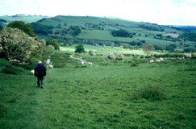
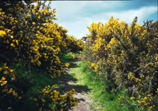
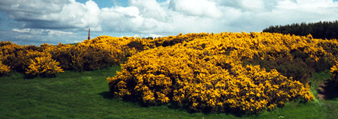
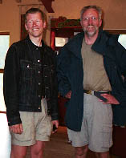
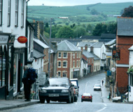

Within a few of miles of starting, we were back on Offa's Dyke, which we hadn't seen for several days. This began a 30-mile sretch of accompanying the Dyke almost continuously. We grew very fond of it! It varied in height from a few feet, just a slight mound, to a 10 or 15 foot bank with ditch. We were sometimes on it and sometimes beside it. 
One memorable sight for us this day had nothing to do with Offa's Dyke itself. We were walking through Granner Wood when we were suddenly startled by seeing writing scratched in the dirt path. We looked carefully, and read
USA |
T & J |
| See you in K |
F & T |
Fred and Theo had written it for us, saying they'd see us in Knighton! In fact, we saw them before that, while we were stopped for lunch. That was the lunch in which I lost a plastic bag. We were on Hawthorn Hill, big wide open fields exposed to the wind, and it was very windy. A plastic bag wasn't well enough secured, and a gust sent it flying. I jumped up and ran after it. I was running uphill over rough, tussocky grass, as fast as I could, but whenever the bag got momentarily caught in the grass and I got tantalizingly close, another gust took it off again. The sheep gave me quizzical looks, as they stood and munched while I charged past. Finally I caught up, reached out for the bag with a final burst of speed -- and tripped and fell flat on my face! I raised my head and looked up at the bag as it flew far, far away...
After we came down Hawthorn Hill we found ourselves in a marvellous area of gorse, in full bloom. It was spectacular, especially with the blue sky we happened to have at that point.

We went to the Offa's Dyke Centre in Knighton, and as we came to the door, it was opened for us, butler-like, by Fred! We sadly said "good-bye" when they left, but actually saw them again later. We were walking down the street by the George and Dragon, heard a knock on the window, and there was Fred, waving! They were taking the train the next day back to Chepstow, since they had only about a week's vacation. We washed our clothes at a laundromat, and chatted there with Brian, another fellow we had met on the path. Brian and his friend Phil were also doing the whole path. We saw them off and on for several days, till they did a longer mileage day than we did, and got ahead of us.
We stayed at the Fleece House, an excellent guest house. Dana Simmons has decorated it lovingly and interestingly. She definitely wanted to make us comfortable, and offered us help and advice of all sorts. We very much appreciated her kindness and efforts.
| Previous Day | Next Day | Home Page |